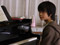
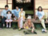
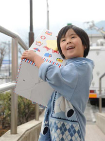

Cinéma pour le Japon vous invite samedi 30 avril à partir de 10h au Nouveau Latina (Paris) à une journée de cinéma pour soutenir le Japon.
10h00
Panda, petit panda
パンダコパンダ 雨ふりサーカスの巻
de Isao Takaha / 1973 / 1h21 / VF
La petite Mimiko trouve dans son lit un bébé panda et son papa ! Tous trois deviennent les meilleurs amis amis du monde, seulement voilà : bébé panda fait beaucoup de bêtises. Que va dire la grand-mère de Mimiko à son retour ? Une des premières œuvres pour le cinéma d'un des maîtres de l'animation japonaise.
À partir de 3 ans

12h00
14h30
A Scene at the Sea
あの夏、いちばん静かな海
de Takeshi Kitano / 1991 / 1h40 / VOSTF
Deux jeunes sourds-muets font connaissance. Il est éboueur. Elle lui est totalement dévouée. Un jour, il trouve une planche de surf au rebut et se met en tête de devenir champion. D'apprentissages éprouvants en compétitions, il se lance à corps perdu dans l'océan.
Séance présentée par Catherine Cadou
17h00
Miwa, à la recherche du Lézard Noir
美輪 黒蜥蜴を探して
de Pascal-Alex Vincent / 2010 / 60 min / VOSTF
L'héroïne glamour du Lézard noir (1968) est interprétée par... un homme, Akihiro Miwa. Retour sur celui qui, depuis 50 ans au Japon, défie les questions de genre tout en restant incroyablement populaire, de ses shows extravagants à ses collaborations avec Kitano ou Miyazaki.
Séance présentée par le réalisateur
19h00
Le Goût du saké
秋刀魚の味
de Yasujiro Ozu / 1962 / 1h55 / VOSTF
Le vieux Hirayama va bientôt marier sa fille, qui est le dernier de ses enfants à vivre encore avec lui. Le mariage approche, et Michiko va devoir quitter le foyer. L'heure est à la mélancolie. Dernier film du grand Yasujiro Ozu.
Séance présentée par Serge Toubiana

21h30Toute la journée au salon rouge du Nouveau Latina : dégustation, ambiances musicales japonaises, exposition/vente d'œuvres d'artistes japonais.
Des spécialités japonaises proposées par une équipe bénévole réunie par Enrichir et l'Atelier de Lili : makis, macarons exotiques, thé vert, saké...
Toute la journée, Lili Koki diffusera en interlude ses compilations kokoro et homemade (musiques de films un peu olé olé mais aussi grands classiques, raretés, tubes, dingueries des années 1960, reprises...). Des Apricots à Little Tempo, sans oublier les Blue Hearts, Kumisolo, Asobi Seksu, Noriko Kato, The Voltage, Kawabara Yukiko et Tani Naomi, un mix kokoro (qui vient du cœur). Regardez et écoutez plutôt, mais n'oubliez pas de danser.
De 14h à 18h, Dame Tartine vous proposera un petit panorama éclectique brassant classiques et oddities allant des 60's à nos jours, ou plus précisément des envolées lyriques de Meiko Kaji aux ritournelles des Pascals en passant par le son 80's des Frank Chickens, sans oublier les morceaux les plus inclassables de Whahaha, le surf de Taheshi Terauchi ni le son latino d'Izumi Yukimura. Quelques liens pour un avant-goût de notre sélection :
Vous en voulez encore ? Dame Tartine diffusera également ses trésors dans la soirée.
De 18h à 19h : Tujikonoriko ! L'incroyable Tujikonoriko sera présente au Salon Rouge, pour un mix exceptionnel !
Tujiko Noriko est une musicienne (chanteuse/compositrice) et réalisatrice japonaise, née à Osaka. Elle vit aujourd'hui à Cachan, en France. Elle commence à chanter à la fin des années 80 mais n'enregistrera son premier album que 10 années plus tard. Entre electro-pop, trip-hop et compositions expérimentales, sa musique se déploie sur des rythmiques répétitives autour desquelles s'organisent samples et mélodies formant une musique d'apparence dépouillée et pourtant complexe avec ses variations graduelles, ses moments d'intensité, ses silences aussi. Elle rencontre Peter "Pita" Rehberg en décembre 2000 à Tokyo et collabore avec celui-ci pour une nouvelle création sonore pour la compagnie de danse DACM (Gisèle Vienne & Étienne Bideau-Rey). Au même moment elle rejoint Slidelab (Yoshihito & Marumaru) et s'implique dans la sortie du magazine OK FRED. En 2005, ce ne sont pas moins de quatre collaborations qui paraissent sous divers labels, dont une création en collaboration avec Portradium, alias Ludovic Poulet, pour l'exposition "Mélancholic Beat" de Saâdane Afif (Folkwang Museum, Essen, décembre 2004) à partir de quatre textes de Lili Reynaud-Dewar. Elle a aussi collaboré avec Aoki Takamasa, Riow Arai et Lawrence English. En juillet 2005, son film Sand and Mini-Hawaii a été projeté pour la première fois à la Fondation Cartier à Paris.
De 20h30 à 21h30 : DJ Paris Exotic Store. La compilation commence par le thème d'Herbes Flottantes de Ozu. Une sélection est chaleureuse et entraînante, dans l'esprit de The Taste of Tea
DJ Paris Exotic Store parcourt les quatre coins du monde à la recherche des cultures enfouies. Ses haltes au Japon sont régulières ce qui lui donne l'occasion de construire des ponts (musicaux et cinématographiques) entre les deux cultures.
De 10h à minuit, exposition et vente de dessins, gravures, photographies, créations, produits japonais.
Le collectif A Team for Japan réunira les artistes suivants, en collaboration solidaire avec le Secours populaire français : Atsuko Ishii, Ayako Sasakibara, Chiho Yoda, Claire Poisson, Fumiko, Hirœ Katagiri, Isabelle Boinot, Jean-Marc Guillot, Laurence Lechau, Miki Nitadori, Stéphane Levallois, Riowen Hedoux.
Seront proposés aussi des objets issus des boutiques Yodoya, Dessin à deux mains, Akiko Takebayashi, Marine Jubert, Miyuki Nagasaka.
Cette journée de solidarité est un geste d'amitié envers le Japon, et un soutien financier.
L'intégralité des recettes des projections de cette journée sera reversée au Secours populaire français.

« Aujourd'hui, le Japon fait face à une catastrophe sans précédent, cumulant séismes, tsunami et catastrophe nucléaire. Les sinistrés se comptent par centaines de milliers. Déplacées, les populations manquent de tout (électricité, eau potable, alimentation, etc.). Le Secours populaire se mobilise pour leur venir en aide.
En partenariat avec l'association japonaise KnK (Kokkyo naki Kodomotachi), le SPF intervient dans la zone de Rikuzen Takata et Iwate. Des couvertures, de l'eau, des couches bébé, des produits de première nécessité sont distribués par les équipes de KnK aux personnes sinistrées qui ont trouvé refuge dans des "centres d'hébergement provisoires".
Parallèlement à cette aide matérielle d'urgence, nous évaluons actuellement avec KnK les axes d'intervention à moyen terme. Un dispositif de visites régulières des personnes sinistrées accueillies dans 100 "centres d'hébergement" est à l'étude, pour répondre aux besoins exprimés. Une attention particulière sera portée aux enfants : distributions de livres, cahiers, crayons, jeux éducatifs et jeux d'extérieur ; soutien à la reprise de la scolarité (ramassage scolaire) ; accueil d'enfants japonais l'été prochain...
Notre démarche s'inscrit bien vers une marque de témoignage concret qui symbolise l'amitié du peuple français avec le peuple japonais. Nous savons que la solidarité apportée par le Secours populaire français sera modeste par rapport à l'immensité des besoins, mais combien elle est importante pour les personnes qui la reçoivent. Savoir qu'à des milliers de kilomètres, en France, des personnes s'organisent pour apporter une aide, est une démarche qui ne peut que confirmer la nécessité de "mondialiser la solidarité". »
Le collectif Help Team for Japan et Artistes solidaires pour le Japon ont pour objectif de réunir toutes les compétences et la bonne volonté de chacun avec le soutien des institutions et organismes, professionnels et particuliers qui se sentent concernés pour permettre d'organiser des concerts, des expositions et des vide-greniers dont les bénéfices sont reversés intégralement aux organisations œuvrant pour aider le Japon : le Secours populaire français et la Croix rouge.
Les bénéfices de la vente des makis, des desserts et des boissons japonaises sera reversée à une autre association, la fondation japonaise Creative Action Links qui a élaboré un projet intitulé Tohoku Kids Solidarity Project. Son but est de fournir livres, fournitures scolaires, activités sociales et soutien moral aux enfants de la région de Miyagi, de Iwate et de Fukushima. Beaucoup d'enfants ont tout perdu : leurs proches, leur maison, tous leurs biens, leur école et leur bibliothèque. Creative Action Links leur fournit une aide matérielle et morale indispensable, au-delà des besoins fondamentaux en nourriture, sécurité et santé...
Prix d'entrée (cinéma) : 5€
Pass pour la journée : 15 €
Cartes UGC ILLIMITÉ et LE PASS acceptées
Le Nouveau Latina
20, rue du Temple
75004 Paris
M° Hôtel de Ville, Rambuteau
www.lenouveaulatina.com
Nous remercions tous les distributeurs et partenaires de cette journée :
Naomi Kawase, Hiroko Masuda, Yuko Tanaka, Minako Ito, Satomi Ishida, Yveline Lee, Kyoko Okunaga, Megumi Terao, Shouka Pak, Junko Sato, Kana Omiya, Chikako Kaneko, Junko Nishiyama, Misako, Masako Abe, Mayako Tani, Misato Ito, Kazu, Chika Maekawa, Sylvie Aupetit, Kyoko Kishino, Marc Lopato, Hitoko Masuda, Maki Asakura, Masa Fuji, Kazuko Matsushima, Akiko Ono, Hiroto Ogi, Fusako Okuno, Kuriko Sato, Shoko Takahashi, Yukiko Yeatman-Eiffel, Dominique Erhard, Serge Toubiana, Catherine Cadou, Jean-François Rauger, Olivier Père, Mélanie Roero, Nicolas Le Thierry d'Ennequin, Anne Lepeaupin, Frédéric Benzaquen, Elodie Dufour, Aurélia Di Donato, Eric Proteaux, Otilia Ribeiro, Eric Gernigon, Guilvic Le Cam, Myriam Bathilly, Géraldine Georgel, Marie-Myriam Mercier, Laura Vassoney, Vincent Paul-Boncour et toute l'équipe de Carlotta Films, Pascal-Alex Vincent, Emilie Cauquy, Hervé Pichard.